Digidex with React
Heat Map of My Location: NodeJS App
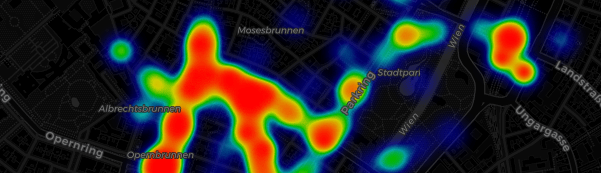78mb GeoJSON converted to tiles in the browser using GeoJSON-VT
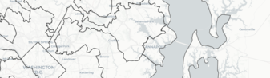European Languages Drag and Drop Game with D3
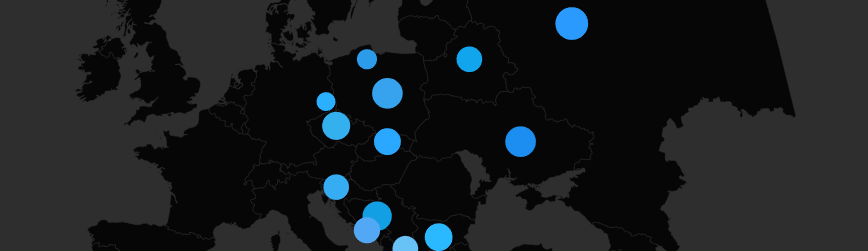All US Counties including Puerto Rico and Minor Outlying Islands with D3
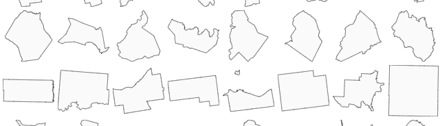3D Map of Urban Honolulu Buildings with Mapbox GL
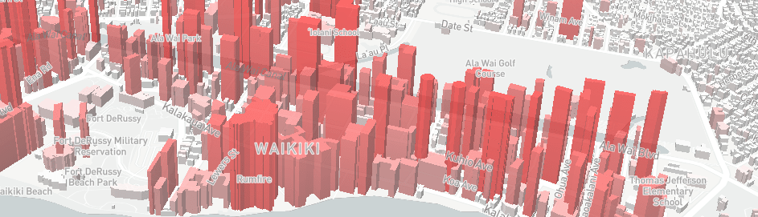GeoTagged Photos with Leaflet.Photo and the Flickr API
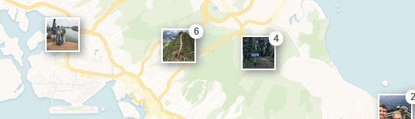Web Map of Starbucks vs. Dunkin' Donuts using Albers Projection in Leaflet
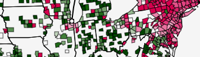Find Your FEMA Flood Zone
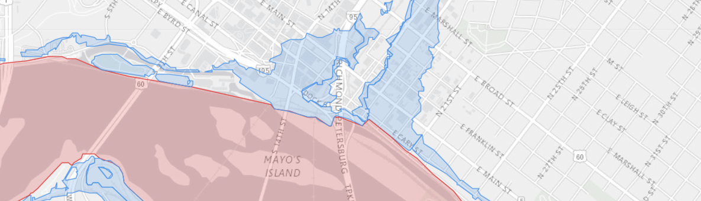D3 Map of US Unemployment from 2001-2015
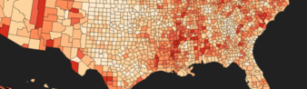Earthquakes in The Past Day Above 1.0 Magnitude
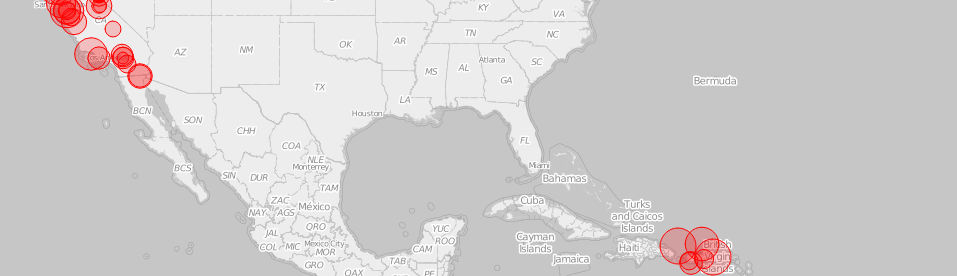Kenyan Primary School Enrollment in 2014
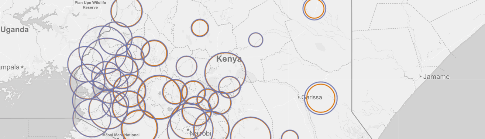Housing Vacancies in Kentucky Counties
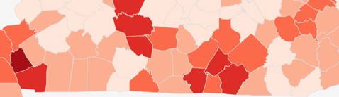Hydroelectric, Nuclear, and Coal Plants in the USA

Breweries in North America
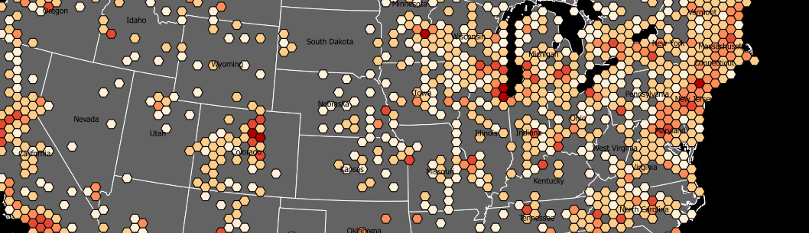